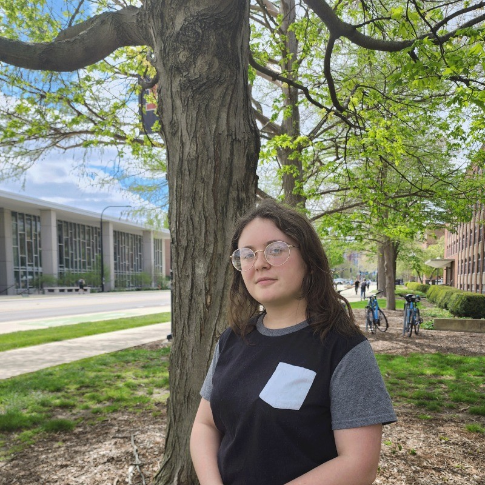

UIUC Astronomy Candidate
hmlperkins@gmail.com
I am a graduate candidate at the University of Illinois Urbana-Champaign in the Astronomy Department working with Professors Gautham Narayan and Brian Fields. While typically I am on campus at UIUC, I am working currently at Lawrence Berkeley National Lab as a Department of Energy Science Graduate Research (SCGSR) Fellow with Dr. Peter Nugent. I am interested in explosive transients and the heavy elements they synthesize. My past research particularly focused on neutron star mergers and, now at LBNL, I am studying stripped-envelope supernovae. You can find more information about my work on my CV as well as my publications down below.
Prior to UIUC, I obtained my B.S. in Physics and Computer Science from St. Lawrence University in Canton, NY. This background has also fueled my interest in astronomy software development. Following this interest, I contributed to the supernovae spectral sythesis code TARDIS as a Google Summer of Code contributor in 2025 and was invited back this year to mentor the next cohort of contributors. I find helping my colleagues with their computational questions very fulfilling!
Outside of academia, I spend my time fawning over my four cats, playing video games, or taste testing tea at a coffee shop.
[2] Perkins, H. M. L., Gautham Narayan, Brian D. Fields, Ved Shah, Genevieve Schroeder (2026). Searching for Neutron Star Mergers in the Absence of Gravitational Waves with Optical Afterglow Emission. The Astrophysical Journal, 1001, 240
[1] Perkins, H. M. L., John Ellis, Brian D. Fields, Dieter H. Hartmann, Zhenghai Liu, Gail C. McLaughlin, Rebecca Surman, Xilu Wang (2024). Could A Kilonova Kill: A Threat Assessment. The Astrophysical Journal, 961, 170
See a full list of my publications on Google Scholar or NASA ADS.
© Haille Perkins, 2026
Using web template from Ved Shah